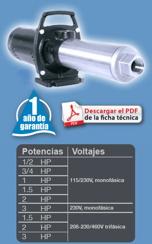

| La bomba marca Altamira serie ALTAPRES fue diseñada para aumentar la presión del agua y puede ser usada en múltiples aplicaciones, gracias a su sistema de impulsor flotante se logran máximas eficiencias, larga vida útil y un incomparable desempeño.
Aplicaciones
- Para sistemas de lavado a presión en construcciones y pisos.
- Para propósitos de limpieza en el sector avícola, porcícola o vacuno.
- Equipo de enfriamiento por rociado.
- Sistemas de irrigación (césped y cultivo).
- Sistema de enfriamiento por evaporación
- Circulación de agua.
- Bombeo de propósito general.
- Ósmosis inversa.
- Procesos de filtración.
Características:
- Cuerpo de la bomba (tubo envolvente): acero inoxidable serie 300.
- Cabezal de descarga: acero inoxidable.
- Soporte de motor: hierro fundido, con un robusto soporte de pie para montaje horizontal o vertical y manija para portabilidad de la unidad.
- Impulsores: fabricados en Celcon. ®
- Difusores: fabricados en Noryl. ®
- Eje de la bomba: en acero inoxidable serie 300.
- Succión y descarga 1" son las mismas en toda la línea,simplifica la instalación y mantenimiento.
- Sello mecánico de Viton. ®
- Temperatura máxima del fluido: 49°C.
- Asíncrono, dos polos.
- Protección IP 22.
- Aislamiento clase B.
- Servicio continuo.
- Las bombas con motor trifásico cuentan con las siguientes
ventajas adicionales:
Soporte del motor de acero inoxidable con un pie de soporte.
Robusto para montaje horizontal o vertical y manija para portabilidad de la unidad.
|
 |